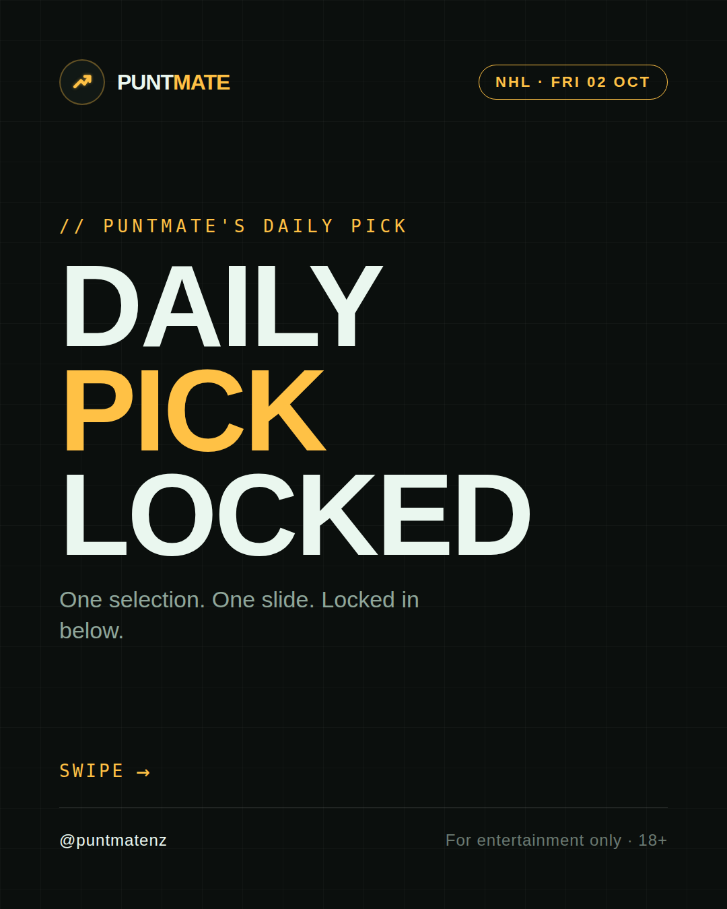
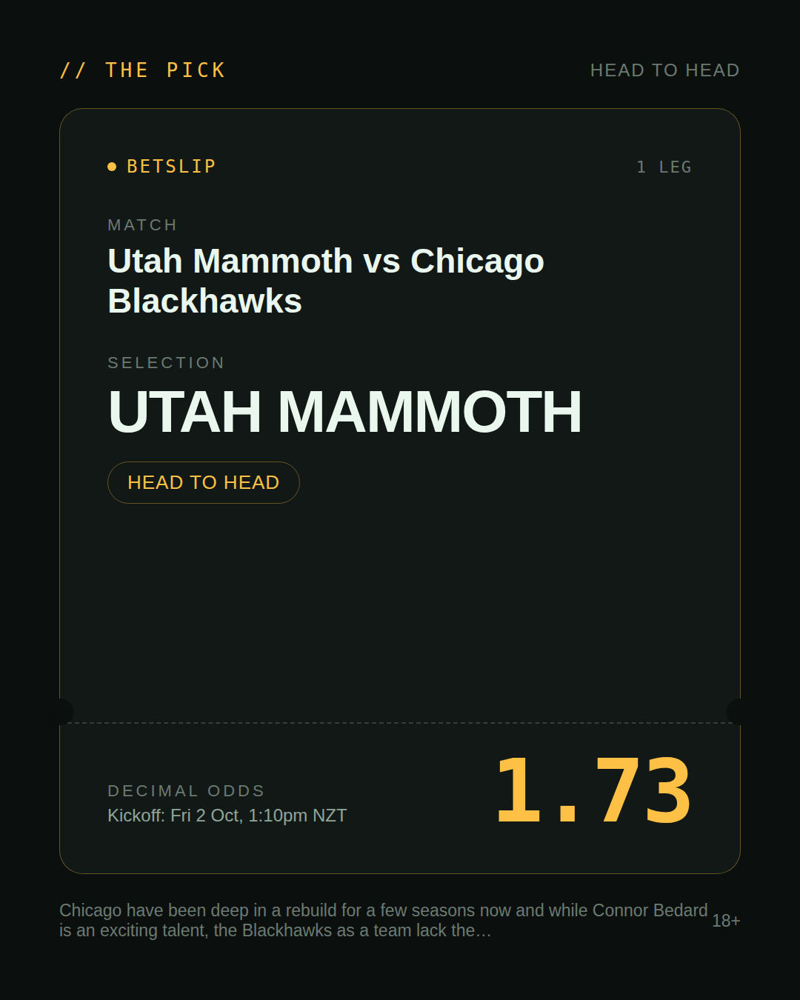
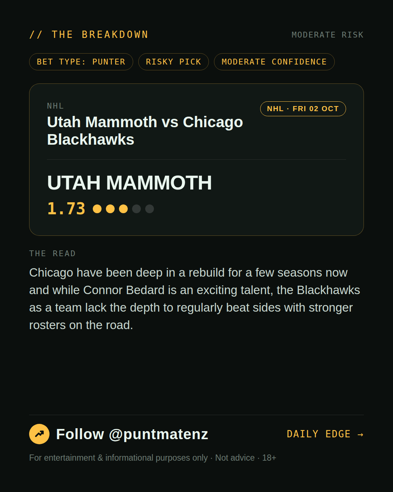
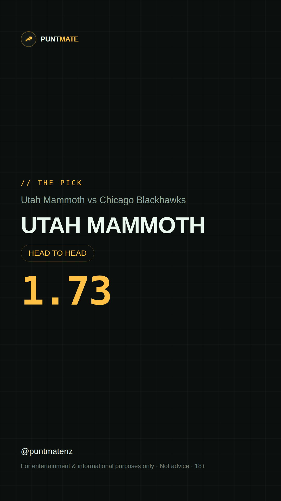

*🎯 PUNTMATE NZ — NHL* 🏟 Utah Mammoth vs Chicago Blackhawks *PICK:* UTAH MAMMOTH *ODDS:* 1.73 (Head to Head) *BET TYPE: PUNTER* _Chicago have been deep in a rebuild for a few seasons now and while Connor Bedard is an exciting talent, the Blackhawks as a team lack the depth to regularly beat sides with stronger rosters on the road._ ────────────────── 📲 Join Telegram for daily picks ⚠️ For entertainment & informational purposes only. Not advice. 18+.
🎯 NHL — Utah Mammoth vs Chicago Blackhawks UTAH MAMMOTH @ 1.73 (Head to Head) BET TYPE: PUNTER Solid touch here. Not a lock, but the value's real and the form backs it up. Chicago have been deep in a rebuild for a few seasons now and while Connor Bedard is an exciting talent, the Blackhawks as a team lack the depth to regularly beat sides with stronger rosters on the road. Follow for daily value picks → @puntmatenz ⚠️ For entertainment & informational purposes only. Not advice. 18+. #PuntmateNZ #SportsBetting #NZTAB #NHL
| has_pick | True |
| pick_id | 2026-10-01_Utah_Mammoth_vs_Chicago_Blackhawks |
| run_id | 36938182545 |
| generated_at | 2026-10-01T23:00:17.164886+00:00 |
| post_date | 2026-10-01 |
| match | Utah Mammoth vs Chicago Blackhawks |
| sport | icehockey_nhl |
| sport_label | NHL |
| market | Head to Head |
| selection | UTAH MAMMOTH |
| odds | 1.73 |
| bet_type | PUNTER_BET |
| bet_type_label | BET TYPE: PUNTER |
| bet_type_reason | Solid touch here. Not a lock, but the value's real and the form backs it up. Chicago have been deep in a rebuild for a few seasons now and while Connor Bedard is an exciting talent, the Blackhawks as a team lack the depth to regularly beat sides with stronger rosters on the road. |
| classification | RISKY_PICK |
| risk | RISKY_PICK |
| confidence | MODERATE |
| confidence_label | MODERATE |
| final_explanation | Chicago have been deep in a rebuild for a few seasons now and while Connor Bedard is an exciting talent, the Blackhawks as a team lack the depth to regularly beat sides with stronger rosters on the road. |
| public_caution | Keep this one light — the value's there but so is the uncertainty. |
| theme | night |
| carousel_paths | ['data/review/2026-10-01_Utah_Mammoth_vs_Chicago_Blackhawks/cover.png', 'data/review/2026-10-01_Utah_Mammoth_vs_Chicago_Blackhawks/tip.png', 'data/review/2026-10-01_Utah_Mammoth_vs_Chicago_Blackhawks/breakdown.png'] |
| carousel_urls | ['https://raw.githubusercontent.com/kingofthecastle24/puntmate/main/data/cards/2026-10-01_Utah_Mammoth_vs_Chicago_Blackhawks_night_1_cover.png', 'https://raw.githubusercontent.com/kingofthecastle24/puntmate/main/data/cards/2026-10-01_Utah_Mammoth_vs_Chicago_Blackhawks_night_2_tip.png', 'https://raw.githubusercontent.com/kingofthecastle24/puntmate/main/data/cards/2026-10-01_Utah_Mammoth_vs_Chicago_Blackhawks_night_3_breakdown.png'] |
| story_path | data/review/2026-10-01_Utah_Mammoth_vs_Chicago_Blackhawks/story.png |
| story_url | https://raw.githubusercontent.com/kingofthecastle24/puntmate/main/data/cards/2026-10-01_Utah_Mammoth_vs_Chicago_Blackhawks_night_story.png |
| intended_platforms | ['telegram', 'instagram_feed', 'instagram_story', 'facebook'] |
| workflow_state | GENERATED |
| has_punter_multi | False |
| has_gambler_multi | False |
| has_degenerate_multi | False |